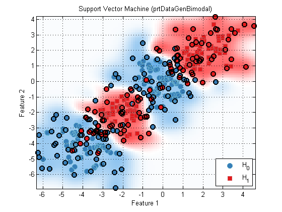
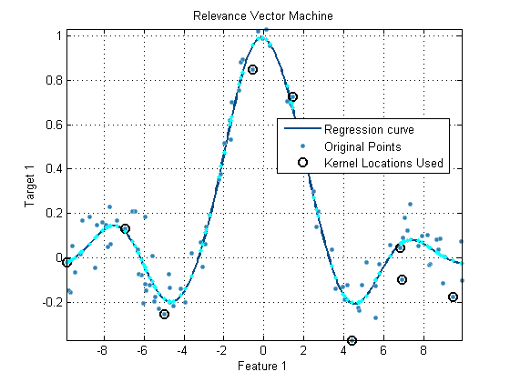

Using kernels with the Pattern Recognition toolbox
Many learning algorithm rely on kernel methods, and the Pattern Recognition Toolbox provides a set of kernel functions to support these algorithms. Support vector machines, and relevance vector machines are common examples of algorithms that rely on kernel methods. These objects have as a data member a kernel object.
Contents
Using prtKernel objects directly
prtKernel objects can be used to compute the Gram matrix. When a prtKernel is trained, the kernel centers are stored in the prtKernel object. When a prtKernel object is run, the Gram matrix is computed using the stored kernel centers and the input data. For example, create a radial basis function kernel using the prtKernelRbf object:
ds = prtDataGenBimodal; % Generate a dataset k1 = prtKernelRbf; % Create a prtKernel object with % default value of sigma k1 = k1.train(ds); % Train, storing the input data g1 = k1.run(ds); % Evaluate, the resulting dataset g1 contains % the Gram matrix
Kernel objects as members of classifiers
Consider a support vector machine:
classifier = prtClassSvm
classifier =
prtClassSvm
Properties:
name: 'Support Vector Machine'
nameAbbreviation: 'SVM'
isNativeMary: 0
c: 1
tol: 1.0000e-005
kernels: [1x1 prtKernelRbfNdimensionScale]
alpha: []
beta: []
sparseKernels: []
sparseAlpha: []
twoClassParadigm: 'binary'
internalDecider: []
isSupervised: 1
isCrossValidateValid: 1
verboseStorage: 1
showProgressBar: 1
isTrained: 0
dataSetSummary: []
dataSet: []
userData: [1x1 struct]
Note that the classifier has property kernels, which is set by default to be a prtKernelRbfNdimensionScale object. A prtKernelRbfNdimensionScale is a radial basis function kernel, that scales with the number of dimensions, and is a commonly used kernel in classification problems. The radial basis function kernel has one user settable parameter, sigma, the inverse kernel width. When the kernel object is a member of a prtClass object, the sigma parameter can be set in the following manner:
classifier.kernels.sigma = .5; % Set the sigma parameter to be .5
Once the classifiers kernel object is configured, the classifier can be trained, run and cross-validated normally.
ds = prtDataGenBimodal; % Generate a dataset k1 = prtKernelRbf; % Create a prtKernel object with % default value of sigma classifier = classifier.train(ds); % Train the classifier plot(classifier)
Notice that on the classifier plot, certain training data points are highlighted with black circles. Those are the kernel centers selected during the training of the support vector machine. During run, the Gram matrix of those kernel centers and the input data will be computed.
prtKernelSet objects
prtKernelSet object allow for prtKernels to be joined together using the & operation. The resulting object behaves exactly like a prtKernel object. The resulting object trains and runs each kernel individually on the provided data. Kernel sets are required for proper operation of certain techniques, such as relevance vector machines. An example of the syntax is given below:
kernels = prtKernelDc & prtKernelRbfNdimensionScale('sigma', 2);
prtKernel objects as part of prtRegress objects
prtKernel objects are used in prtRegress objects in the same manner. For example:
dataSet = prtDataGenNoisySinc; % Load a prtDataRegress dataSet.plot; % Display data reg = prtRegressRvm; % Create a prtRegressRvm object reg.kernels = kernels % Change the kernel set to be the kernel % set defined above reg = reg.train(dataSet); % Train the prtRegressRvm object reg.plot(); % Plot the resulting curve dataSetOut = reg.run(dataSet); % Run the regressor on the data hold on; plot(dataSet.getX,dataSetOut.getX,'c.') % Plot, overlaying the % fitted points with the % curve and original data legend('Regression curve','Original Points','Kernel Locations Used',0) % All kernel objects in the Pattern Recognition Toolbox have the % same API as discussed above. For a list of all the different objects, % and links to their individual help entries, <prtDocFunctionList.html#9 A % list of commonly used functions>
reg =
prtRegressRvm
Properties:
name: 'Relevance Vector Machine'
nameAbbreviation: 'RVM'
kernels: [1x1 prtKernelSet]
verbosePlot: 0
verboseText: 0
learningConverged: []
beta: []
Sigma: []
sigma2: []
sparseBeta: []
sparseKernels: {}
plotOptions: [1x1 prtOptions.prtOptionsRegressPlot]
isSupervised: 1
isCrossValidateValid: 1
verboseStorage: 1
showProgressBar: 1
isTrained: 0
dataSetSummary: []
dataSet: []
userData: [1x1 struct]
